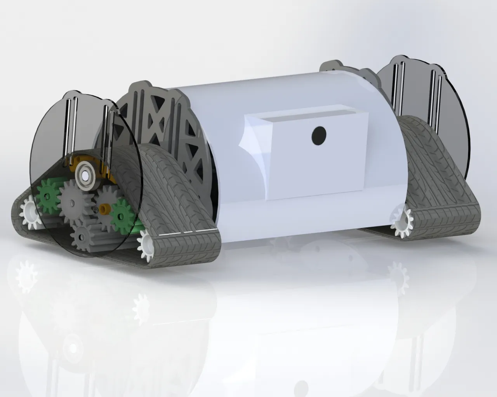

Manpackable Transformable Surveillance Robot
Wheel-Track Transformable Surveillance Robot — single-actuator Modified Watt II six-bar linkage
Single-actuator wheel↔track transformation · patent in process · multi-award winner

Overview
Designed a compact, rugged, terrain-adaptive rescue robot with a transformable wheel-track mechanism using a single actuator (Modified Watt II six-bar linkage), enabling reliable traversal across diverse terrains. Intended for critical applications in search and rescue, reconnaissance, and disaster response, the robot is compact, lightweight, and optimised for rapid deployment in confined or hazardous environments. Validated dynamic system performance through motion and torque simulations in SolidWorks, MotionGen, MATLAB, and Abaqus (FEA). Integrated ROS2, ESP32-CAM, and sensors (IMU, DHT11) for real-time video streaming and remote control. Prototyping via additive manufacturing and sheet-metal fabrication. Designed using DFMA principles for ease of manufacturing and assembly.
What it does
- Single-actuator Modified Watt II six-bar linkage for wheel↔track transformation
- Designed for search-and-rescue, reconnaissance, and disaster response
- Compact, lightweight, man-packable form factor
- Real-time video streaming via ESP32-CAM with remote control over ROS2
- Sensor suite: IMU + DHT11 environmental sensor
- DFMA-driven design — additive manufacturing and sheet-metal fabrication
- Validated via motion + torque simulations in SolidWorks, MotionGen, MATLAB, and Abaqus FEA